Qu'est ce que c'est ?
Bien plus qu'un anime. C'est une leçon de science passionnante et accessible qui transforme l'apprentissage en une aventure palpitante. À travers les aventures de Senku pour redécouvrir la technologie dans un monde post-apocalyptique, la série enseigne de manière ludique des concepts scientifiques variés comme la chimie, la physique et la biologie. Chaque épisode est une immersion dans la créativité et l'ingéniosité, montrant que la science peut être à la fois amusante et instructive. En combinant humour, suspense et exploration scientifique, "Dr. Stone" captive son public en leur offrant une expérience éducative enrichissante et divertissante.
Dr. Stone" est une série de manga et d'anime qui raconte l'histoire de Senku Ishigami, un jeune génie scientifique, et de ses amis après que l'humanité a été pétrifiée pendant plus de 3 700 ans. Réveillé dans un monde où la civilisation moderne a disparu, Senku utilise ses vastes connaissances en science pour reconstruire la société à partir de zéro. Avec des thèmes de survie, d'ingéniosité et de collaboration, "Dr. Stone" célèbre la puissance de la science et de l'esprit humain pour surmonter les défis et redécouvrir les merveilles de la technologie.
Dr. Stone" est une série de manga et d'anime qui raconte l'histoire de Senku Ishigami, un jeune génie scientifique, et de ses amis après que l'humanité a été pétrifiée pendant plus de 3 700 ans. Réveillé dans un monde où la civilisation moderne a disparu, Senku utilise ses vastes connaissances en science pour reconstruire la société à partir de zéro. Avec des thèmes de survie, d'ingéniosité et de collaboration, "Dr. Stone" célèbre la puissance de la science et de l'esprit humain pour surmonter les défis et redécouvrir les merveilles de la technologie.
Apport bénéfique
Grâce à ses situations comiques créées par le contraste entre le savoir scientifique avancé de Senku et le monde préhistorique où il se trouve, "Dr. Stone" ne manque jamais de susciter des rires. Les tentatives souvent maladroites pour réinventer des technologies simples, comme la fabrication de savon ou la création d'électricité, sont sources de scènes hilarantes. De plus, les interactions entre les personnages principaux, chacun avec sa propre personnalité distincte, ajoutent une couche supplémentaire de comédie. Senku, le génie excentrique mais pragmatique, et Taiju, l'ami loyal mais un peu simple d'esprit, provoquent des dialogues et des situations comiques tout au long de la série..
Dr. Stone" est une série de manga et d'anime qui raconte l'histoire de Senku Ishigami, un jeune génie scientifique, et de ses amis après que l'humanité a été pétrifiée pendant plus de 3 700 ans. Réveillé dans un monde où la civilisation moderne a disparu, Senku utilise ses vastes connaissances en science pour reconstruire la société à partir de zéro. Avec des thèmes de survie, d'ingéniosité et de collaboration, "Dr. Stone" célèbre la puissance de la science et de l'esprit humain pour surmonter les défis et redécouvrir les merveilles de la technologie. Dr. Stone" est une série de manga et d'anime qui raconte l'histoire de Senku Ishigami, un jeune génie scientifique, et de ses amis après que l'humanité a été pétrifiée pendant plus de 3 700 ans. Réveillé dans un monde où la civilisation moderne a disparu, Senku utilise ses vastes connaissances en science pour reconstruire la société à partir de zéro. Avec des thèmes de survie, d'ingéniosité et de collaboration, "Dr. Stone" célèbre la puissance de la science et de l'esprit humain pour surmonter les défis et redécouvrir les merveilles de la technologie.


Amuser et Divertir
Nous voulons avant tout vous offrir un lieu de divertissement où vous pourrez plonger dans l'univers passionnant de Dr. Stone. Que vous soyez un fan de longue date ou un nouveau venu dans cet univers, notre site est conçu pour vous divertir et vous captiver à travers des contenus variés et intéressants.
Apprendre et Découvrir
Dr. Stone est une série riche en connaissances scientifiques et en concepts fascinants. Nous souhaitons exploiter cette richesse pour vous faire découvrir de nouvelles choses. Nos articles, vidéos et jeux sont pensés pour éveiller votre curiosité et vous encourager à explorer différents domaines scientifiques.
Stimuler la Logique et la Mémoire
L'un des aspects les plus captivants est la manière dont la série intègre des défis logiques et des concepts scientifiques complexes. Nous vous proposons des activités et des jeux qui stimuleront votre esprit et renforceront vos capacités logiques et votre mémoire. Que ce soit à travers des jeux ou des expériences scientifiques à réaliser chez vous, nous espérons vous offrir des outils pour développer vos compétences.
Pour Tous les Âges
Notre site vise à créer un pont entre le divertissement et l'éducation, en exploitant la richesse de cet univers pour vous offrir des contenus ludiques et instructifs. Nous espérons que vous prendrez autant de plaisir à explorer notre site que nous en avons eu à le créer. Rejoignez-nous dans cette aventure scientifique et amusante !
-
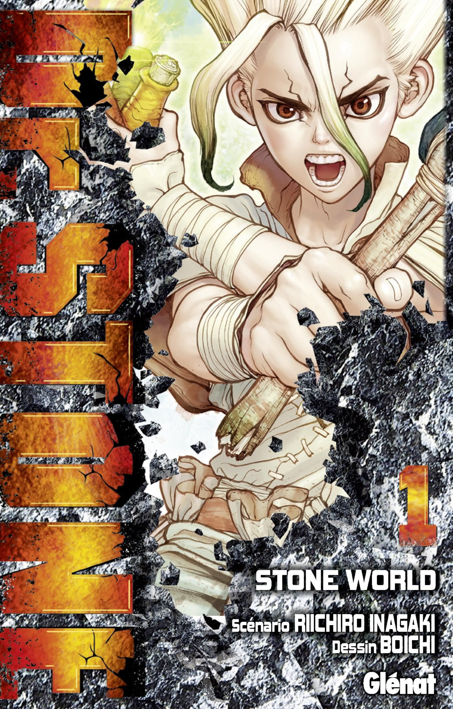
TOME 1
Taiju et Senku se réveillent après des milliers d'années de pétrification. Ensemble, ils utilisent la science pour reconstruire la civilisation et cherchent un moyen de dé-pétrifier l'humanité.
-
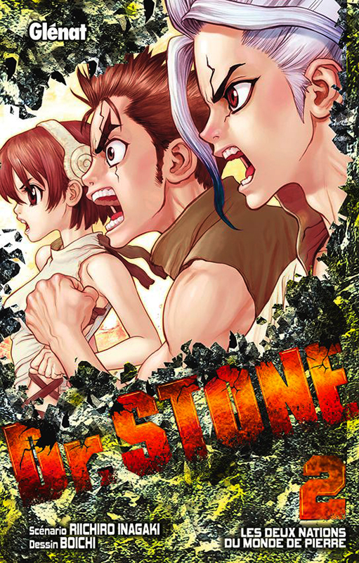
TOME 2
Senku et ses amis développent la science pour défendre et dé-pétrifier plus de personnes, avec un accent sur la création de la poudre à canon.
-
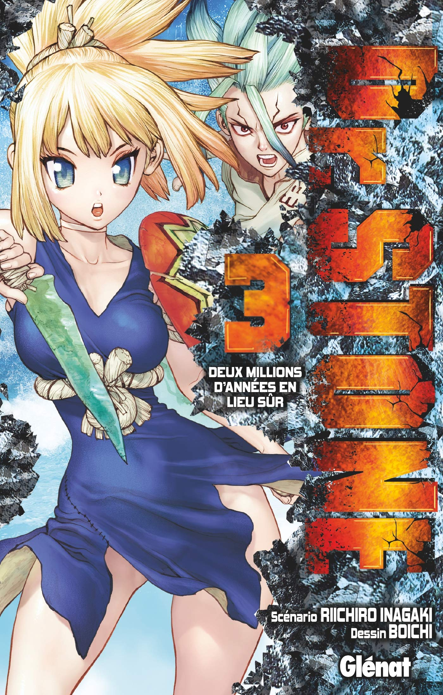
TOME 3
L'équipe se concentre sur la création d'électricité pour ramener la technologie moderne dans un monde primitif, tout en affrontant des tensions croissantes avec d'autres groupes humains.
-
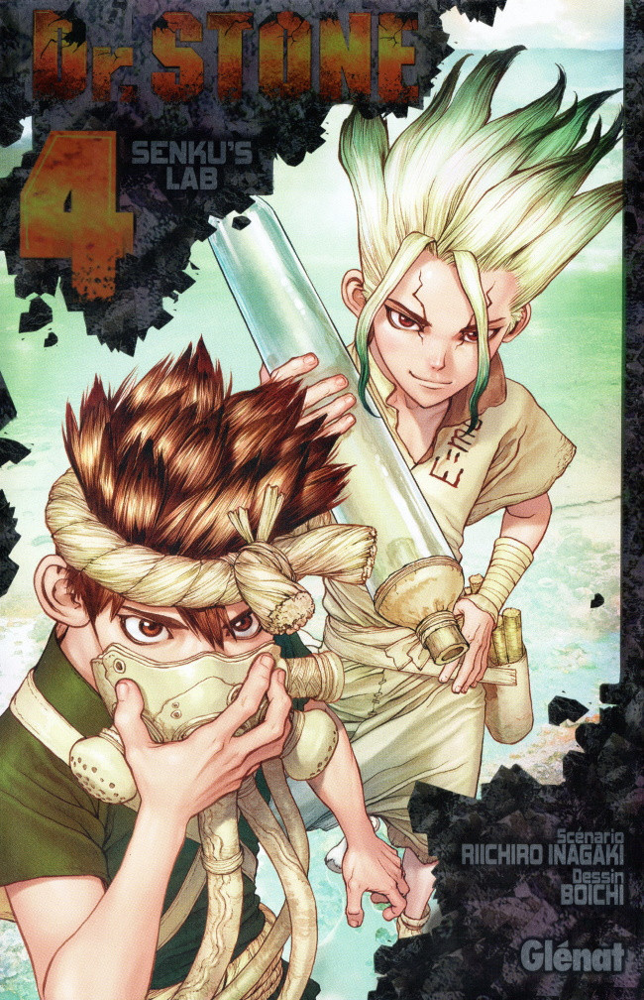
TOME 4
Senku et ses alliés fabriquent des téléphones rudimentaires pour établir des communications à longue distance, tout en explorant de nouveaux matériaux et en confrontant des adversaires avides de leur savoir scientifique.
-
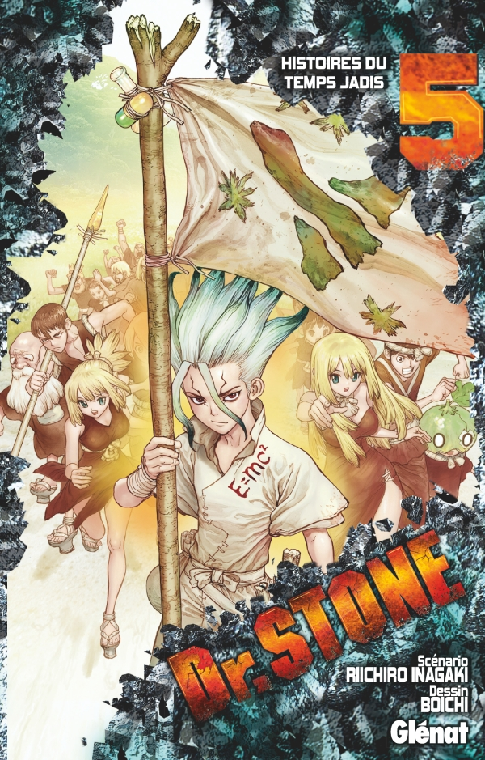
TOME 5
Royaume de la Science tentent de créer un téléphone portable, surmontant des défis techniques et faisant face à de nouvelles alliances et confrontations.
-
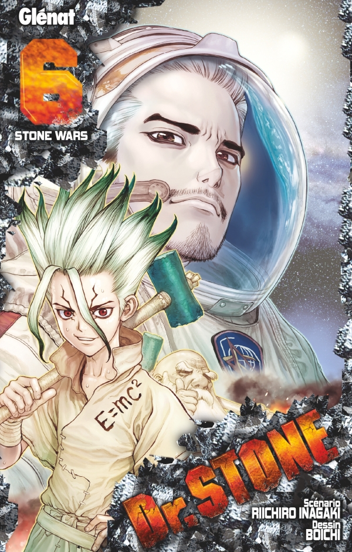
TOME 6
Royaume de la Science avance dans ses découvertes technologiques tout en affrontant des défis et en nouant des alliances pour reconstruire la civilisation.
-
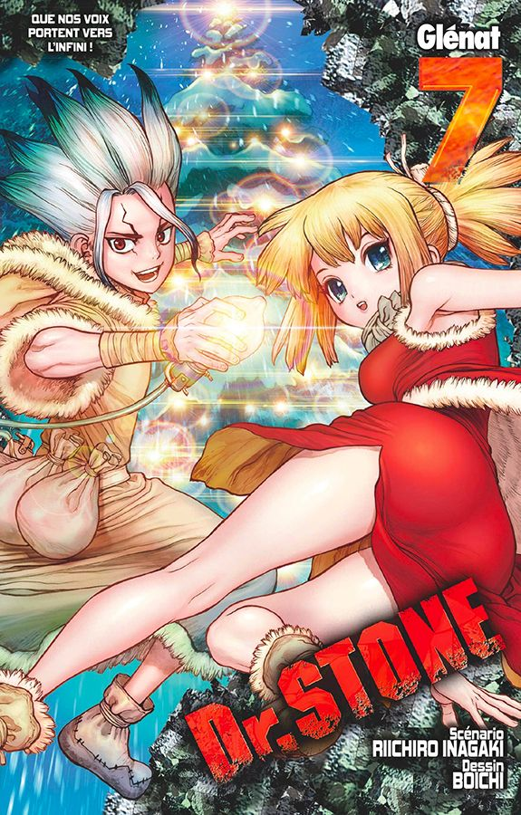
TOME 7
Royaume de la Science progresse technologiquement tout en relevant des défis et en consolidant des alliances pour reconstruire la civilisation.
-
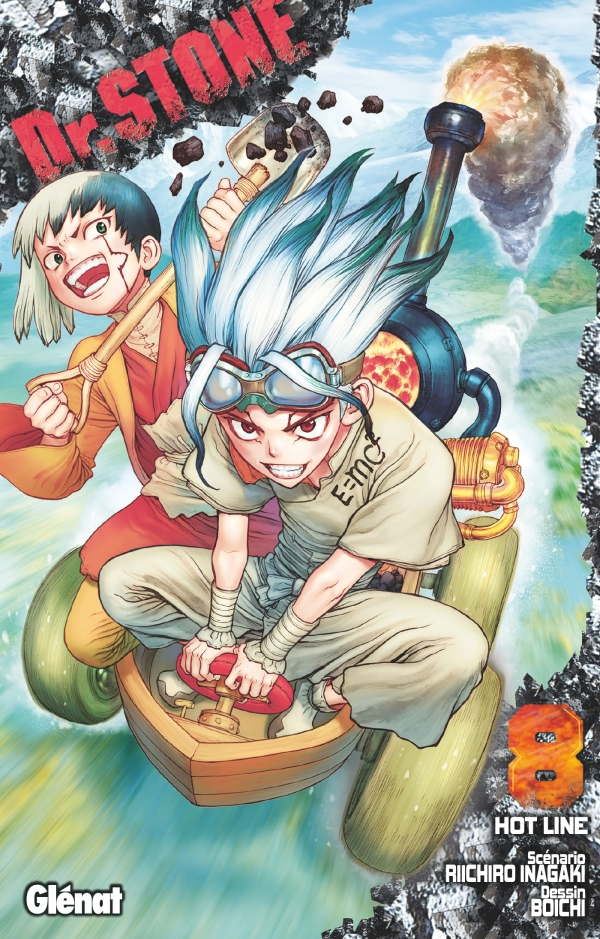
TOME 8
poursuit ses découvertes technologiques tout en affrontant des défis croissants et en consolidant ses alliances pour reconstruire la civilisation.
-
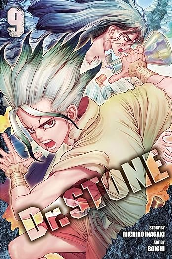
TOME 9
poursuit ses découvertes technologiques tout en affrontant des défis croissants et en consolidant ses alliances pour reconstruire la civilisation.
-
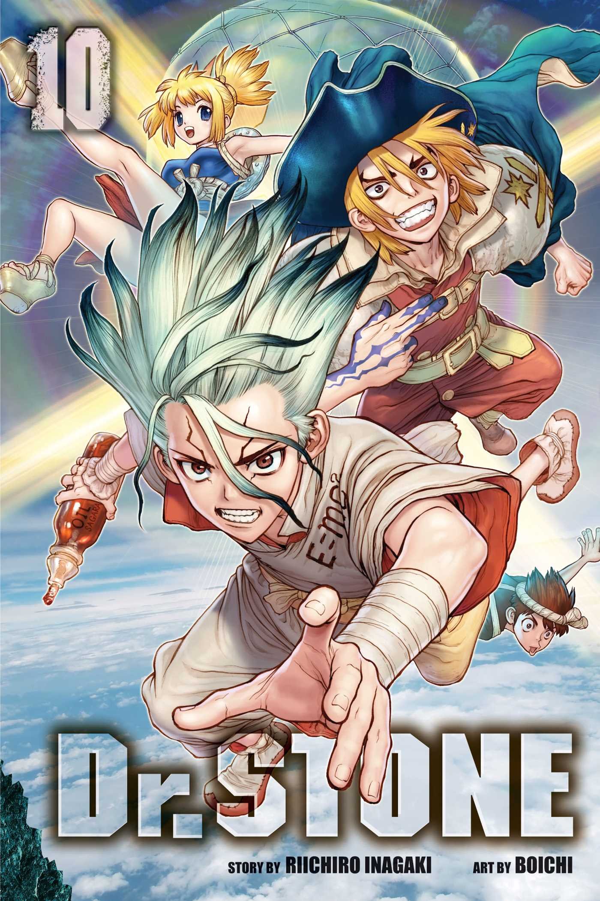
TOME 10
poursuit ses découvertes technologiques tout en affrontant des défis croissants et en consolidant ses alliances pour reconstruire la civilisation.
-
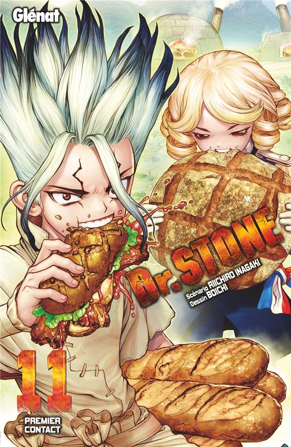
TOME 11
poursuit ses découvertes technologiques tout en affrontant des défis croissants et en consolidant ses alliances pour reconstruire la civilisation.
-
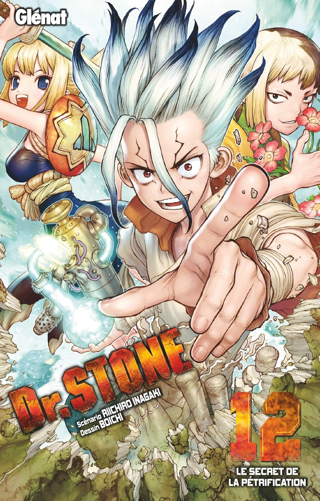
TOME 12
poursuit ses découvertes technologiques tout en affrontant des défis croissants et en consolidant ses alliances pour reconstruire la civilisation.